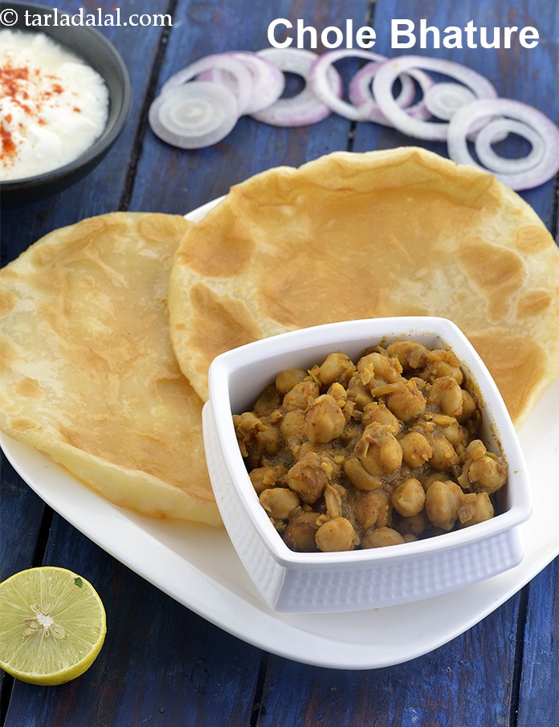

Chole Bhature

Description
A filling Mumbai favorite, consisting of spongy bhaturas (puffy Indian flat bread) served with appetizing chole (chickpeas).
Ingredients
For the Chole
- 1 cup kabuli chana (white chick peas), soaked overnight and drained
- 1 tea bags or 1 tsp of tea powder (chai ki patti) tied in muslin cloth
- 2 tbsp oil
- 1/2 tsp cumin seeds (jeera)
- 1/2 cup finely chopped onions
- 1/2 tsp finely chopped ginger (adrak)
- 2 tsp finely chopped garlic (lehsun)
- 2 tsp chole masala
- 1 tsp chilli powder
- 1 tsp dried mango powder (amchur)
- 1/4 tsp turmeric powder (haldi)
- 2 tsp coriander (dhania) powder
- 1 tsp cumin seeds (jeera) powder
- salt to taste
For the Bhature
- 1 cup plain flour (maida)
- 1/2 cup boiled peeled and grated potatoes
- 2 1/2 tbsp curd (dahi)
- 1/2 tbsp oil
- salt to taste
- oil for deep-frying
For Serving with Chole Bhature
- 6-8 sliced onions
- 2 lemon wedges
Steps
For the Chole
- Combine the kabuli chana, salt, tea leaf tied in muslin cloth and enough water in a pressure cooker and pressure cook for 3 whistles.
- Allow the steam to escape before opening the lid. Remove the tea powder tied in muslin cloth and drain the kabuli chana. Keep aside.
- Heat the oil in a deep non-stick pan and add the cumin seeds. Sauté on a medium flame for 30 seconds.
- Add the onions, ginger and garlic and sauté on a medium flame for 1 to 2 minute or till the onions turn translucent.
- Add the chole masala, chilli powder, dried mango powder, turmeric powder, coriander powder, cumin seeds powder, salt and 1 cup of water, mix well and cook on a medium flame for 1 to 2 minutes, while stirring occasionally.
- Add the kabuli chana, mix well and cook on a medium flame for 5 to 7 minutes, while stirring occasionally. Mash the kabuli chana once lightly with a help of a masher. Switch off the flame, keep aside.
For the Bhature
- Combine the flour, potatoes, curd, oil and salt and knead to make a soft dough using enough water.
- Cover the dough with a wet muslin cloth and rest the dough for 20 minutes.
- Divide the dough into 8 equal portions and roll each portion into a 150 mm. (6") diameter circle using a little plain flour for rolling.
- Heat the oil in a deep non-stick pan and deep-fry the bhatures, one at a time, till they turn golden brown in color from both sides.
How to Proceed to Serve the Chole Bhature
- Serve hot bhatures immediately with the chole, sliced onion and lemon wedges.
Handy Tips
- While frying the bhature, press the centre lightly with a frying spoon so as to help it to puff up.
- Chole masala is a blend of spices which is readily available at most grocery stores.
Source